|
La Ccasca es el trabajo y festividad del escarbo de la acequia en Lluta, la misma que se realiza los ocho primeros días del mes de agosto. Cada año es una festividad que se rinde culto a la naturaleza, del medio del homenaje a la tierra y al agua. Esta actividad está conformada y dirigida por un grupo de personas: el alférez, el primer capitán, segundo capitán, tercer capitan y los “yacupusamoc”.
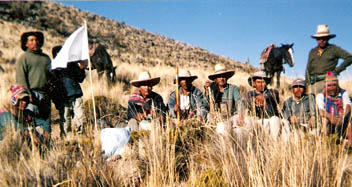
Se inicia con el despacho, el cual se realiza días previos al trabajo en si 30 y 31 de julio.
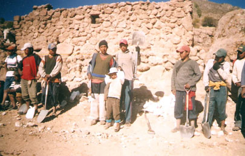
Las etapas del trabajo en el escarbo:
Primer día.- Trabajo que se realiza en los sitios conocidos como Huatac y Ccalccatamayo. Tradición importante: Pago a la tierra y al agua. (Pascana)
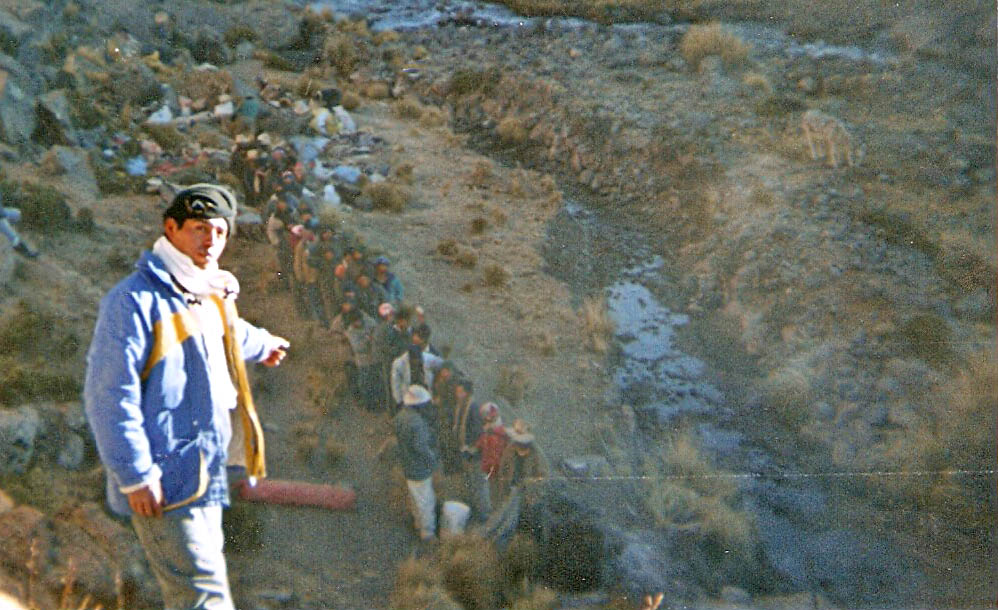
Segundo y tercer día.- Trabajo y tinca de Ccollpa.
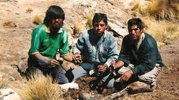
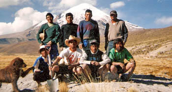
Cuarto día.- Día de trabajo en Tiopascana a Curinta. Tradición Importante: Ceremonia de Santa Úrsula.
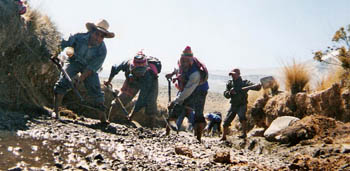
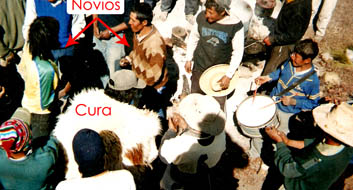
Quinto día.- Escarbo en Curinta. Tradición importante: Pago a los tres ojos de agua.
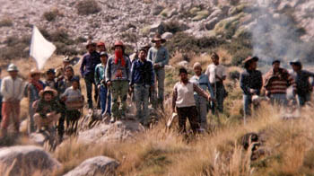
Sexto día.- Llegan hasta Choclón. Tradición importante: Juego del Choclón.
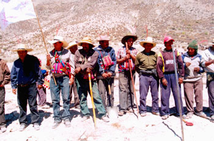
Séptimo día.- En Antaccaya, comen carne de cordero porque en todo el trayecto comieron carne de llama.
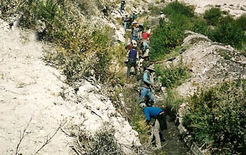
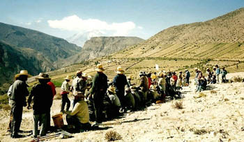
Octavo día.- de Antaccaya a la Punta, lugar donde colinda con la campiña Lluteña.
Tradición importante: Llegada del agua y de la masa trabajadora al pueblo de Lluta.
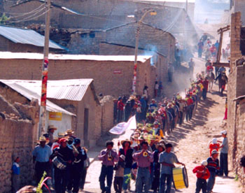
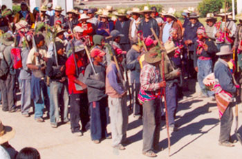
Al día siguiente: El pago en Marpozo y llegada del agua a Ccasao.
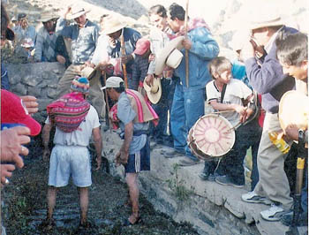
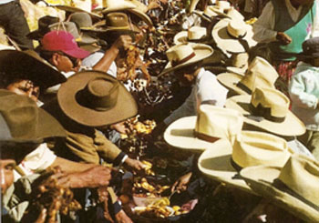 |